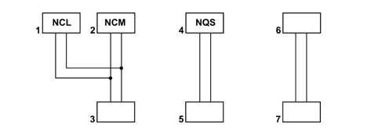
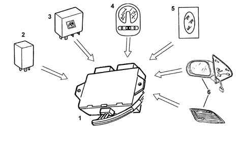
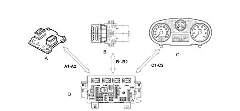
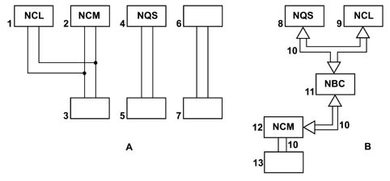
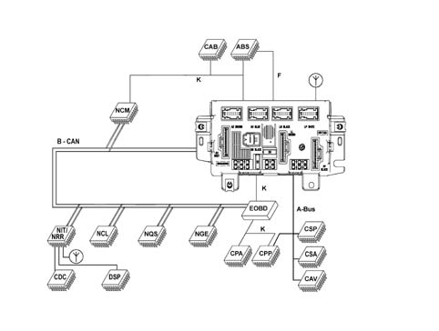
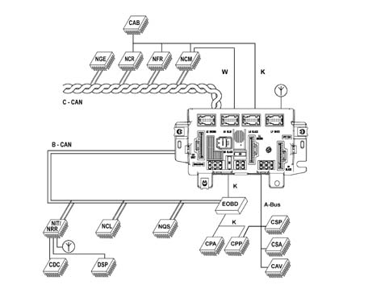
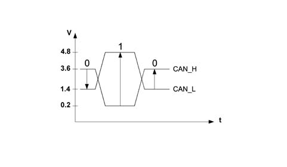
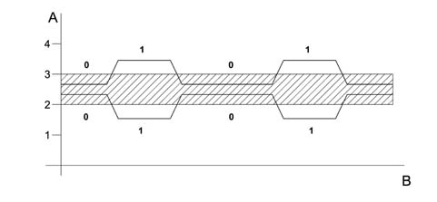
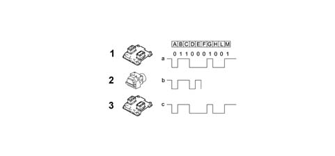

Introduction - ELECTRICAL CIRCUIT FOR INSTRUMENTS/INDICATORS
- Path
- Descriptions > 55 ELECTRICAL EQUIPMENT > 5505 ELECTRICAL CIRCUIT FOR INSTRUMENTS/INDICATORS > Introduction - ELECTRICAL CIRCUIT FOR INSTRUMENTS/INDICATORS
- Kind
- system description
- Applies to
- all engines; all production periods
- Interactive page
- https://sloeber94.github.io/elrnDB-fPnd/en/#/2753484
Applies to: all engines; all production periods
GENERAL CHARACTERISTICS
In conventional electrical systems, functions are activated with the aid of dedicated point-to-point connections.
As the number of eletrical/electronic devices on board new vehicles has increased, the connection are becoming more complex and heavy. One reason for this is the complexity of functions implemented in the many electronic units, which require a continual interchange of data. All this makes it more difficult to install new electrical systems and increases the complexity of fault diagnosis.
Many problems have been resolved and new electrical systems have been optimised compared to conventional systems by means of networking. This provides a more effective means of managing communication on board the car and for the transfer of information between subsystems via the serial buses present: single wires, pairs of twisted wires or even optical fibres. We shall now see how the move from conventional systems to those known as multiplexing has taken place.
Applies to: all engines; all production periods
CLASSIC SOLUTION
The four control units in the diagram below require a number (N) of wires for each input/output in order to perform their function. This has created so much wiring that the system is more complex (design and manufacture), more bulky (weight, bulk and cost) and requires some 40 kg of wiring harnesses amounting to a length of more than 2 km. This requirement is likely to double every 10 years because even now one such vehicle may be equipped with 20 to 40 control units (ECUs).

1 - Climate control node 2 - Engine management node 3 - Engine temperature sensor (for engine management node) 4 - Instrument panel node 5 - Engine temperature sensor (for instrument panel warning light) 6 - Engine cooling fan 7 - Engine temperature bulb
Applies to: all engines; all production periods
CLASSIC SOLUTION
The first step that allowed us to reduce the volume and the complexity of the wiring harnesses was to group several electronic functions in a single unit: FEWER COMPONENTS = FEWER WIRES.
Applies to: all engines; all production periods
EXAMPLES OF INTEGRATION
The multi-function control unit manages: central locking, electric windows, courtesy light timer, heated rear windscreen timer and heated, exterior rear view mirrors.

1 - Multifunction control unit 2 - Central locking 3 - Electric window control unit 4 - Centre courtesy light 5 - Rear courtesy light 6 - Heated rear windscreen / heated door mirrors
Applies to: all engines; all production periods
EXAMPLES OF INTEGRATION
The integration of electrical/electronic functions in a single unit has allowed us to improve:
- the management of current consumption
- the functionality of appliances because they are managed by a single control unit;
- the fault diagnosis using control unit self-diagnosis
This first stage has allowed us to reduce the number of electronic units but not to reduce the volume of wiring harnesses sufficiently.
Applies to: all engines; all production periods
MULTIPLEXING SOLUTION
This solution has made it possible to reduce the volume of cable looms and to considerably improve the transmission of information between the various electronic units.
These transmissions take place through a BUS channel consisting of 2 cables (the main one already used for the telephone, radio, television network etc.)

A - B - C: NODES (CONTROL UNITS) D: MASTER CONTROL UNIT OR BODY COMPUTER A1 - A2, B1 - B2, C1 - C2: COMMUNICATION BUS
Applies to: all engines; all production periods
MULTIPLEXING SOLUTION
In addition to simplifying the wiring and improving communication between the electronic units, the multiplexing solution also makes it possible to reduce the number of sensors (INFORMATION SHARING)

A - Classic solution B - Multiplexing solution 1 - Climate control node 2 - Engine management node 3 - Engine temperature sensor (for engine management node) 4 - Instrument panel node 5 - Engine temperature sensor (for instrument panel warning light) 6 - Engine cooling fan 7 - Engine temperature bulb 8 - Instrument panel node 9 - Climate control node 10 - Engine temperature information 11 - Body Computer node 12 - Engine management node 13 - Engine temperature sensor (for engine management node)
Applies to: all engines; all production periods
MULTIPLEXING SOLUTION
In general, in order to send data via multiplexing, we need to define the following:
- (A) THE TRANSMISSION CHANNEL (electric cables, optical fibres, radio waves, etc.)
- (B) THE TYPE OF SIGNAL (voltage, current, light, etc.)
- (B) THE COMMUNICATION PROTOCOL (all the rules that allow management of analogue or digital transmission management, code type, address, transmission order, error recording etc.).
On this model, the transmission channel (A) is a pair of electrical wires known as a BUS.
The type of signal (B) is VOLTAGE and the communication protocol (C) is the CAN (Controller Area Network) developed by BOSCH.
Applies to: all engines; all production periods
N.I.C.E. architecture
The 'N.I.C.E.' system (Network Integration Component Electronics)has been designed for the optimum management of the vehicle's electrical and electronic functions.
The system interacts with all the electrical system functions, directly cotnrolling the so-called bodywork functions (visibility, access, on board information, comfort, telematics, etc.) and supporting the exchange of data between the traction control systems (engine, braking, gearbox, etc.).
For excellent performance each control unit (electronic or electro-mechanical) is located in a central position in relation to the functions which it manages. This allows minimisation of the power and signal distribution system through the extensive use of serial communication networks, with advantages when solving the problems of size, reliability, weight and cost.
The distribution of power takes place via the junction units and/or fuse boxes, connected to the control elements (relays and static actuators) in order to ensure the maximum level of electrical protection and the minimum degree of wiring complexity .
The ultrasound weld spots inside the vehicle wiring have been eliminated and replaced with short circuiting connections.
Systems such as the N.I.C.E. system offers countless advantages such as, for example:
- the sensors in the various subsystems are made available to the network in order to be shared eliminating the presence of similar sensors
- new functions can only be added by modifying the software (developed during the vehicle life),
- wiring design is simplified and the number of connectors is reduced,
- electronic device operating safety is increased to improve the reliability of information transmited,
- an integrated diagnostic function simplifies service operations on electric/electronic components.
The structure consists of two CAN communication networks that connect nodes belonging to three different areas (dynamic control of the vehicle and bodywork functions) and a certain number of complementary serial lines/
The N.I.C.E. system used for the basic version of the Fiat Gingo uses low speed CAN serial network for communication between nodes. With features such as the VDC and robotised gearbox, a second networ is present (high speed) for dynamic vehicle control functions.
On the Fiat Panda, the system also contains:
- 1 SERIAL LINE W for immobilizer recovery
- 1 K SERIAL LINE for the fault diagnosis of several NODES / CONTROL UNITS
- 1 F SERIAL LINE for brake system status
- 1 Serial line known as A - BUS
Below is a table containing all the elements (nodes/control units/devices) which make up the N.I.C.E. structure giving the most complete configuration for the Fiat Panda.
N.I.C.E. system components
CAB | Air bag control unit |
|---|---|
CDC | CD-Changer |
CAV | Volumetric Alarm Control Unit |
CPP | Tyre Pressure Control Unit |
CSA | Anti-theft Alarm Control Unit |
DSP | HiFi audio amplifier |
CSP | Rain Sensor Control Unit |
NPL/NBC | Facia Node/Body Computer Node |
NCR | Robotized/Automatic Gearbox Node |
NCL | Climate Control Node |
NCM | Engine Control Node |
NFR | Braking System Node |
NGE | Electrical steering node |
NRR/NIT | Radio Set NodeInfotelematic Node |
NQS | Instrument panel node |
CPA | Parking Sensor Node |
The electrical protections (fuses) are all grouped in the power distribution unit, positioned in the engine bay and facia.
The two C-CAN and B-CAN networks are physically separate from one another, but both meet at the BODY COMPUTER NODE; the latter, which is considered the MASTER node for the two networks, contains a GATEWAY function which allows the transfer of information/dat from one network to the other, even if the two networks are operating at different speeds:
- B-CAN NETWORK transmission speed = 50 Kbit/sec.
- C-CAN NETWORK transmission speed = 500 Kbit/sec.
Below is a diagram summarizing the structure of the N.I.C.E. system variants used on the different specification levels.
Basic trim level

Applies to: all engines; all production periods
N.I.C.E. architecture
Top of the range trim level

Applies to: all engines; all production periods
N.I.C.E. architecture
Refer to the previous table for a description of the nodes.
Applies to: all engines; all production periods
B-CAN NETWORK CONNECTION
The B - CAN network (low speed) on the Fiat Panda consists of 2 electrical cables, one White/Pink shown in the wiring diagram as a CAN - A cable and one Black/Pink one shown in the wiring diagram as a CAN - B cable.
The transmission of information through this pair of cables takes place through the transmission of 2 voltage levels (V), one High and one Low associated with the CAN - A cable and the CAN - B cables, respectively. the mathematical difference between these two levels produces two voltage values associated with two logic levels, 0 or 1.
The latter constitute the basic information unit known as BIT (binary digit) and, suitably combined, they make up the information to be transmitted.

Applies to: all engines; all production periods
B-CAN NETWORK CONNECTION
V Can A - V Can B = 3.6 - 1.4 = + 2.2 V (bit 0)
V Can A - V Can B = 0.2 - 4.8 = - 4.6 V (bit 1)
Applies to: all engines; all production periods
C-CAN NETWORK CONNECTION
The C - CAN network (high speed) on the Fiat Panda consists of two twisted electrical cables, one Green, shown in the wiring diagram as the CAN - H cable and one Brown, shown in the wiring diagram as the CAN - L cable.
The transmission of information is the same as that for the B - CAN network. in this case the High voltage level is associated with the C-CAN - H cable and the Low voltage level with the C-CAN - L cable.
The mathematical difference for these two voltage levels for the C - CAN network also gives rise to two logic levels, 0 and 1, but with one difference illustrated in the diagram:

Applies to: all engines; all production periods
C-CAN NETWORK CONNECTION
The network interface cannot communicate at all if one of the following situations arises in the C-CAN:
- Break in one of the two CAN cables (H and L)
- Short circuit between the two CAN cables (H and L)
- Short circuit of the CAN - H cable or the CAN - L cable to +Vbatt.
- Short circuit of the CAN - H cable of the CAN - L cable to earth.
Applies to: all engines; all production periods
PRIORITIES IN THE CASE OF A TRANSMISSION CONFLICT FOR SEVERAL NODES
The protocol for the N.I.C.E. system can deal with problems of superimposition when several nodes wish to issue a frame simultaneously. A node sending a lower priority message interrupts its transmission immediately to make way for the node transmitting a higher priority signal. In practice, the higher priority message is sent via the network without any interruption or delay.
The frame with the highest priority gains the possibility of being transmitted through the BUS; a dominant level (0) always overcomes a recessive level (1).
Simultaneous access of several control units to the network may give rise to conflict on the C-CAN line (BUS) the diagram shows that the engine control unit node (NCM) and the brake system control unit (NFR) send identical frames (data packages) up to point (D); from point (E) the two frames have a discordant bit.
Because the NFR node is simultaneously checking (reading) the frame as well as transmitting it, from this moment on as soon as the NFR node realises that the bit it wishes tot transmit (1) of recessive value will come up against a bit (0) of dominant value in the network, it immediately interrupts transmission of its frame (loss of arbitrage) to give way to the NCM node, which is transmitting a higher priority frame. It stands by until the NCM node has finished transmitting and the line becomes free. The frame transmitted along the network is from the NCM node. The NFR may now re-attempt to gain access to the line to send the frame it tried to send previously. Provided another collision does not occur.

1 - NCM begins transmitting 2 - NFR begins transmitting (at the same time as the NCM transmission) 3 - Final outcome of transmission
Applies to: all engines; all production periods
A-BUS LINE CONNECTION
The A - BUS serial line is designed to guarantee the exchange of information / commands between the various electronic control units. The A-Bus connection leads are pink-red.
On the Fiat Panda, these control units are:
- Tyre pressure control unit (CPP)
- Volume-sensing alarm control unit (CAV)
- Rain Sensor Control Unit (CSP)
- Anti-theft alarm control unit (CSA)
- Facia Node (NPL)
The A-BUS transmission speed is 4.8 kbits/sec.
Communication at the A - BUS takes place through the exchange of data packages between the different control units.
Each control unit connected to the A - BUS has its own electronic address; when one control unit has to send a command / information to another control unit, it must always enter the address of the destination control unit in the data package.
Transmission always takes place from a transmitting control unit to a receiving control unit (one-way).
When the data reception is complete, the receiving control unit should send the outcome to the transmitting control unit, thereby ending the data package exchange.
Unlike the CAN NETWORKS, the transmission priorities at the A - BUS are assigned to each control unit and not to the information to be transmitted, therefore the control unit access sequence in the case of a transmission conflict is decided at the design stage.
Applies to: all engines; all production periods
LINE K CONNECTION
All electronic control unit K lines run into the EOBD 16-way connector built into the Passenger Compartment Cable Box. The Body Computer Node (hereafter referred to as the Facia Node (NPL) contans a seial line (W) with an NCM for immobiliser recovery. The lead is grey-green.
In tthe Fiat Panda mini N.I.C.E system, the K lines make it possible to carry out the fault diagnosis using the diagnostic equipment for the following Nodes / Control Units:
- Electric steering node (NGE)
- Robotised Gearbox (NCR)
- Engine Management Node (NCM)
- Brake Node (NFR)
- Air Bag Control Unit (CAB)
- Parking Sensor Control Unit (CPA)
- Tyre pressure control unit (CPP)
- Facia Node (NPL)